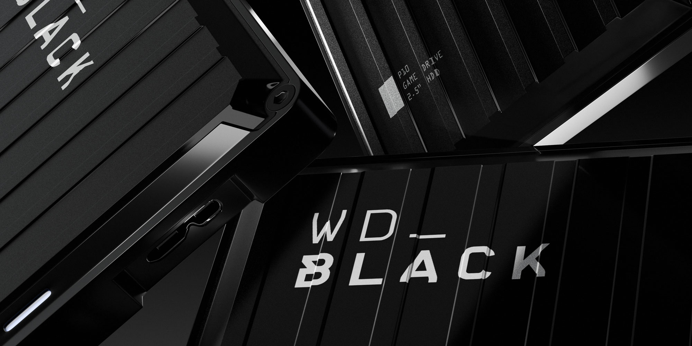
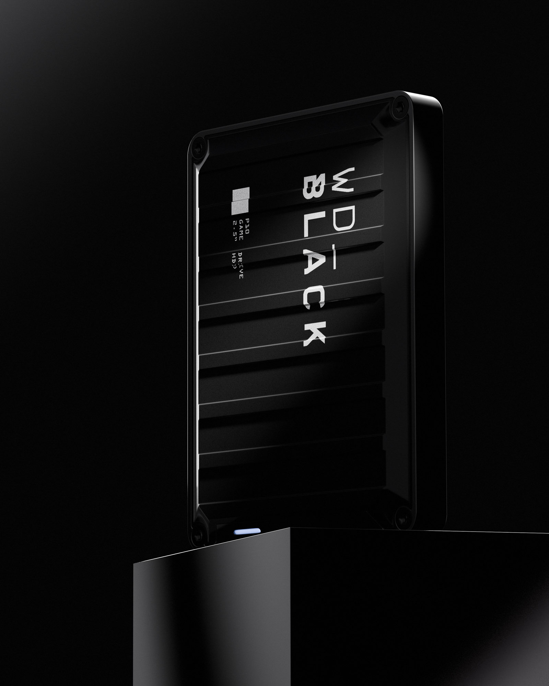
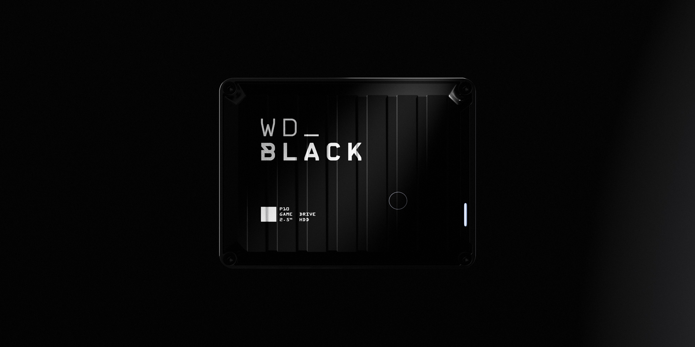

WD BLACK
OVERVIEW
Blender / Substance Painter / Photoshop - 2022 (Revised 2025)
This 4TB hard drive by Western Digital is a sturdy and rugged hard drive designed for gamers and creators with the most demanding storage requirements. It showcases a sleek black anodized aluminum case with an industrial look. I created this model in late 2021 as a freshman at Rochester Institute of Technology, using reference off of my own WD Black hard drive that I still use to this day. I revamped the model and rerendered the entire project in 2024. The drive was created using subdivision modeling in Blender, while being textured in Substance Painter with Greyscalegorilla materials as a base. All images were lit and rendered in Cycles.


